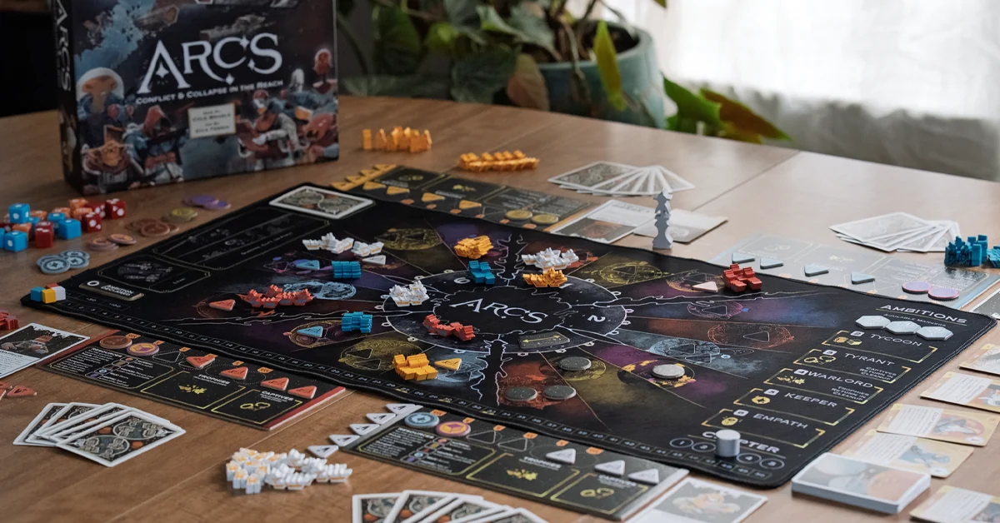
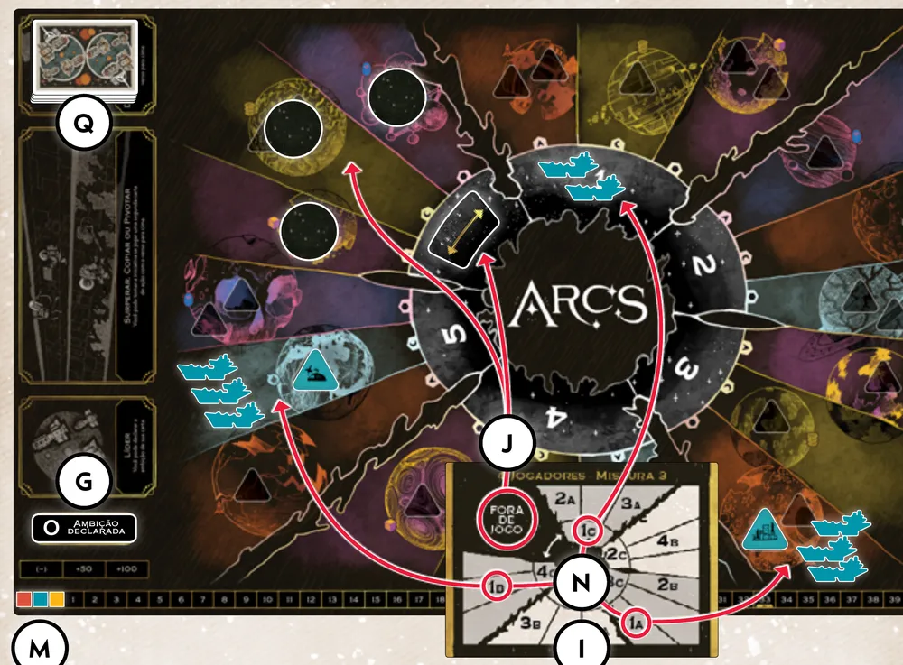
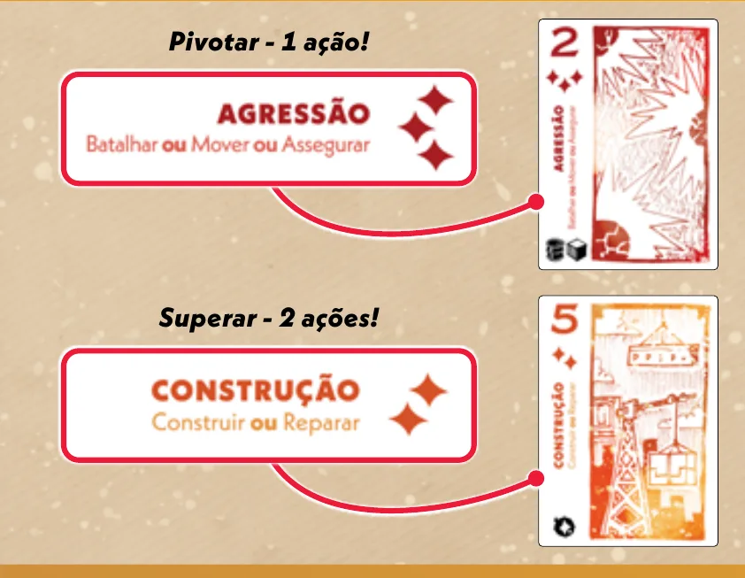
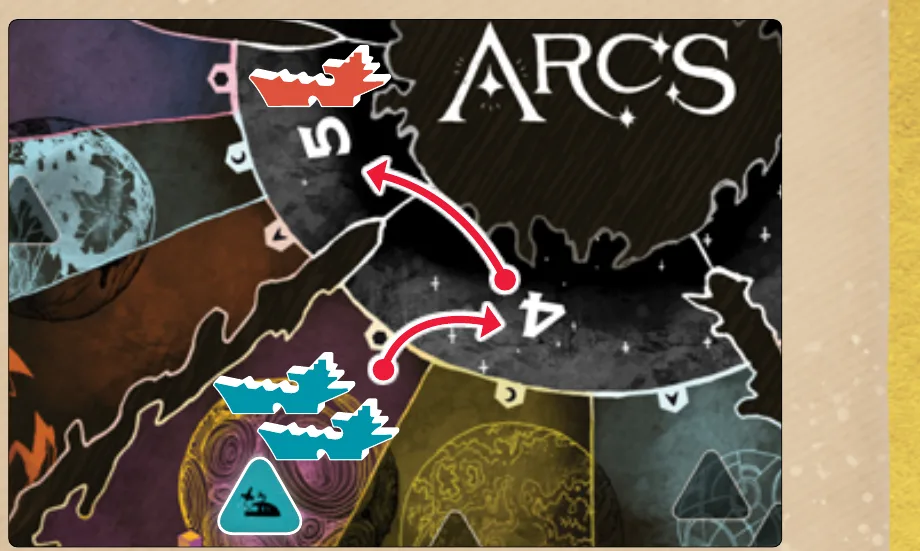
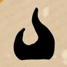
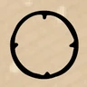
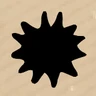
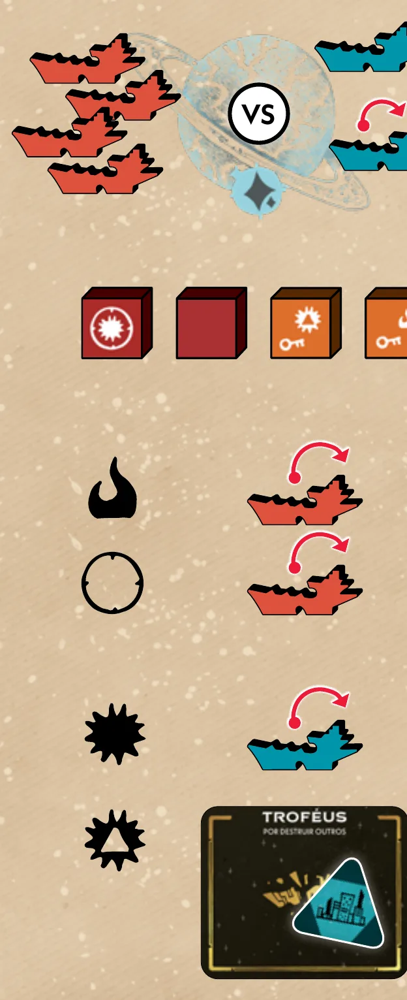
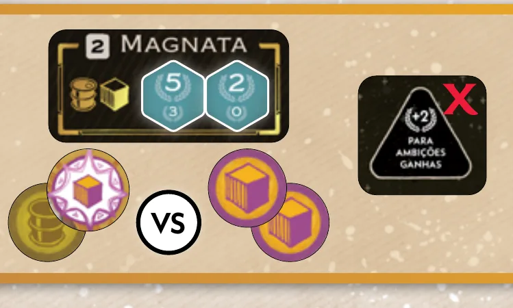

Imagem: Buried Giant Studios · diário de criação da expansão Arcs: Beyond the ReachVazas · Conflito espacial
Como jogar Arcs
Para quem nunca jogou2 a 4 jogadores60 a 120 min14+Edição Meeple BR
· Redação Elite Boardgamers
Resumo em 1 minuto
Você joga cartas de ação para mover naves, construir, taxar e batalhar no Vértice, declara ambições e vence quem juntar mais Poder ao fim dos capítulos.
Quem tem a iniciativa joga a carta líder; os outros Superam (mesmo naipe, número maior), Copiam ou Pivotam.
O Poder vem das ambições declaradas, pontuadas no fim de cada capítulo: Magnata, Tirano, Senhor da Guerra, Guardião e Empata.
A partida acaba quando alguém chega a 27, 30 ou 33 de Poder (4, 3 ou 2 jogadores) ou no fim do capítulo 5.
Como você aprende: 5 etapas, da mesa montada à contagem de pontosLeitura do essencial: cerca de 13 min
À vista, só o essencial para jogar. O que abre com + é explicação, exemplo, exercício ou regra de caso especial: abra quando precisar.
Comece a jogar em 4 minutos

Imagem: Buried Giant Studios
Meta: em 4 minutos de leitura, entender o objetivo, montar a mesa e jogar a primeira rodada sem abrir o manual.
A ideia do jogo
Cada jogador comanda naves, cidades e agentes no Vértice, um mapa de planetas e portais. Você ganha Poder (os pontos do jogo) completando ambições: ter mais recursos de certo tipo, mais prisioneiros ou mais troféus. A partida costuma ter de 3 a 5 capítulos, no máximo 5. Ela acaba no fim do capítulo em que alguém chega a 27 de Poder (4 jogadores), 30 (3 jogadores) ou 33 (2 jogadores), ou no fim do capítulo 5. Vence quem tiver mais Poder p. 2 e 19.
Monte a mesa
Mapa no centro, com os 18 dados de batalha e as 25 fichas de recurso ao lado. Sorteie quem fica com o marcador de iniciativa p. 4.
Baralho de ação: as 20 cartas de "2" a "6", embaralhadas. Com 4 jogadores, junte também as 8 cartas "1" e "7".
Os 3 marcadores de ambição, com o lado azul para cima, nos Marcadores Disponíveis; o marcador do capítulo no "1"; o marcador zero em Ambição Declarada.
Corte: embaralhe as 6 cartas de Vox com as 25 de Guilda e abra 3 cartas (2 jogadores) ou 4 (3 ou 4 jogadores) ao lado do mapa.
Revele 1 carta de preparação da sua contagem de jogadores. Nos aglomerados que ela marca como Fora de Jogo, ponha o marcador de caminho no portal e 3 marcadores fora de jogo nos planetas.
Cada jogador pega o tabuleiro, 5 cidades, 5 espaçoportos, 15 naves e 10 agentes da sua cor; as cidades vão para os espaços triangulares do tabuleiro. Marcador de Poder no 0 p. 5.
Peças iniciais, nos sistemas marcados na carta de preparação com o seu número (1 para quem tem a iniciativa, depois 2, 3 e 4 em sentido horário): em A, 3 naves e 1 cidade; em B, 3 naves e 1 espaçoporto; em C, 2 naves (com 2 jogadores, 2 naves em cada um dos dois sistemas C).
Cada um recebe as 2 fichas de recurso dos planetas dos seus sistemas A e B e compra 6 cartas de ação. As cartas que sobrarem vão para o descarte, viradas para baixo.
Sua primeira rodada
Uma rodada é uma volta na mesa: em geral, cada jogador joga 1 carta de ação. Quem não tem cartas é pulado p. 8 e 10.
Quem tem a iniciativa joga a carta líder, virada para cima, e faz uma ação por ponto de ação da carta, conforme o naipe. Antes, pode declarar a ambição mostrada na carta.
Os outros, em sentido horário, escolhem uma de três formas: Superar (mesmo naipe e número maior que o da líder: faz ações até os pontos da carta), Copiar (carta virada para baixo: faz 1 ação da carta líder) ou Pivotar (outro naipe, qualquer número: faz 1 ação da própria carta).
No fim da rodada, a iniciativa vai para quem Superou com o número mais alto (se ninguém a tomou antes).
Naipe
Ações
Administração
Taxar, Reparar, Influenciar
Agressão
Batalhar, Mover, Assegurar
Construção
Construir, Reparar
Mobilização
Mover, Influenciar
O Jogador 2 não tem nenhuma carta do naipe da carta líder. O que pode fazer?
Superar exige o mesmo naipe da líder. Copiar aceita qualquer carta, virada para baixo, e Pivotar exige carta de outro naipe; os dois dão 1 ação p. 10.
Como se ganha Poder
No fim do capítulo, quando ninguém tem mais cartas, pontuam as ambições declaradas. Quem estiver em primeiro numa ambição ganha o valor maior dos marcadores dela; o segundo, o valor menor p. 18. As ambições são: Magnata (Matéria-Prima e Combustível), Tirano (Prisioneiros), Senhor da Guerra (Troféus), Guardião (Relíquia) e Empata (Psiônico).
Prefere ver? Uma partida resumida e as regras em vídeo; em caso de diferença, vale o manual.
ARCS: Gameplay resumida, canal Duque Board Games · abrir no YouTubeArcs: Como Jogar, com Romir G. E. Paulino, tradutor do manual brasileiro (canal Romir Play House) · abrir no YouTube
0Antes de tudo: o que é este jogoOpcional
Imagem: Buried Giant StudiosAbrir esta seção
Arcs é um jogo de conflito no espaço para 2 a 4 pessoas p. 3 e 4. Você lidera uma sociedade de viajantes espaciais no Vértice, a borda da galáxia, e disputa Poder com os outros p. 2. A primeira partida leva cerca de 45 minutos por jogador; depois, cerca de 30 p. 2.
O jogo lembra jogos de vaza, como os de baralho: alguém lidera um naipe, os outros seguem, superam ou fogem dele. Só que cada carta não ganha uma vaza: ela vira ações no mapa. Por isso a decisão de cada turno é dupla: que ações você quer e o que a sua carta deixa os outros fazerem.
O Poder vem quase todo das ambições. A pessoa com a iniciativa pode declarar uma ambição, mas qualquer jogador pode completá-la p. 6. Declarar é uma aposta pública: você aumenta o prêmio de algo em que espera ir bem, e todos ficam sabendo.
1Como este guia ensinaOpcional
Imagem: Buried Giant StudiosAbrir esta seção
O guia tem cinco etapas: montar a mesa e ler o mapa; jogar uma rodada; fazer as ações; batalhar; fechar o capítulo e pontuar. Em cada etapa vêm a explicação, o passo a passo com as regras exatas e, no fim, os exercícios da etapa. Toque numa opção para ver a resposta certa e a explicação. No final, uma avaliação curta indica o que reler, e uma folha de consulta vai para a mesa.
2Etapa 1: montar a mesa e ler o mapa
Por que funciona assim

O mapa preparado para 3 jogadores: a carta de preparação mostra os aglomerados fora de jogo e os sistemas iniciais de cada jogador (1A, 1B, 1C e assim por diante). Ilustração: manual Meeple BR p. 4Regra adicional: Preparação para 2 jogadoresRegra adicional: Troca de mão com 2 jogadoresVer um exemplo resolvidoPratique esta etapa: exercícios com respostas
3Etapa 2: jogar uma rodada
Por que funciona assim
Número da carta
Ambição
2
Magnata
3
Tirano
4
Senhor da Guerra
5
Guardião
6
Empata

Com a carta líder de Construção na mesa, uma carta de Agressão Pivota e dá 1 ação; a Construção "5" Supera e dá as 2 ações da carta. Os pontos de ação são as estrelinhas abaixo do número. Ilustração: manual Meeple BR p. 10Regra adicional: Tomar a iniciativaRegra adicional: Passar a iniciativaRegra adicional: Declarar ambiçãoVer um exemplo resolvidoPratique esta etapa: exercícios com respostas
4Etapa 3: fazer as ações
Por que funciona assimRegra adicional: Movimento Estilingue

Movimento Estilingue: duas naves saem de um planeta com espaçoporto Leal, passam pelo portal 4 e param no portal 5, controlado por outro jogador. Ilustração: manual Meeple BR p. 13Regra adicional: Prelúdio: quando não dáRegra adicional: Cartas de GuildaRegra adicional: Cartas de VoxRegra adicional: Cartas que guardam recursosVer um exemplo resolvidoPratique esta etapa: exercícios com respostas
5Etapa 4: batalhar
Por que funciona assim
Símbolo do dado
O que faz p. 14

chama
danifique uma das suas naves atacantes

círculo
interceptação: danifique uma das suas naves atacantes para cada nave defensora inteira (uma vez por batalha)

explosão
danifique uma nave defensora; sem naves defensoras, uma construção defensora
explosão com triângulo
danifique uma construção defensora
chave
gaste para saquear recursos e cartas do defensor
Ícones reproduzidos do livro de regras da Meeple BR p. 14.

O exemplo de batalha do manual, passo a passo: 4 naves atacantes contra 1 nave inteira, 2 danificadas e 1 cidade; os dados rolados; os 2 danos sofridos (chama e interceptação); a nave defensora deitada e a cidade destruída, que vai para os Troféus. Ilustração: manual Meeple BR p. 15Regra adicional: Limite de dados de SaqueRegra adicional: UltrajeRegra adicional: Sem naves nem espaçoportosVer um exemplo resolvidoPratique esta etapa: exercícios com respostas
6Etapa 5: fechar o capítulo e pontuar
Por que funciona assim
Marcador de ambição (lado azul)
Primeiro lugar
Segundo lugar
maior
5
3
do meio
3
2
menor
2
0
Valores lidos na ilustração das p. 5 e 18. O outro lado dos marcadores vale mais.

Magnata com os marcadores 5/3 e 2/0: os dois jogadores empatam em primeiro, cada um leva 3 de Poder, e o bônus de cidade "+2" não vale. Ilustração: manual Meeple BR p. 18Regra adicional: Empates na ambiçãoRegra adicional: Bônus de Poder das cidadesRegra adicional: Pontuação com 2 jogadoresVer um exemplo resolvidoPratique esta etapa: exercícios com respostas
7Situações especiaisOpcional
Imagem: Buried Giant StudiosAbrir esta seçãoRegra adicional: Líderes e ConhecimentoRegra adicional: Cartas sobre o manualRegra adicional: Empates e ordemRegra adicional: NegociaçãoRegra adicional: Limite de peçasRegra adicional: Cartas na mãoRegra adicional: Dois montes de descarte (variante)
8Avaliação finalOpcional
Imagem: Buried Giant StudiosAbrir esta seção
Responda sem consultar. Cada resposta diz o que reler se errar.
Quem pode declarar uma ambição?
Declarar é do jogador com a iniciativa, com a ambição da carta líder p. 9. Se errou, releia a etapa 2.
Você joga uma carta de outro naipe, virada para cima. Isso é:
Pivotar é jogar outro naipe virado para cima, com 1 ação p. 10. Se errou, releia a etapa 2.
Quantos recursos você recebe ao Taxar uma cidade Oponente que você controla?
= Taxar dá 1 recurso; cidade Oponente também dá um Prisioneiro p. 12. Se errou, releia a etapa 3.
Você tem uma nave num sistema que outro jogador continua controlando e constrói um espaçoporto lá. Como ele entra?
Construir em sistema controlado por outro jogador põe a peça danificada p. 12. Se errou, releia a etapa 3.
Na batalha, com o que você paga o saque?
O saque gasta as chaves roladas, um item de cada vez p. 16. Se errou, releia a etapa 4.
Uma ambição tem dois marcadores, 3/2 e 2/0. Quanto vale o primeiro lugar?
Os valores maiores dos marcadores somam: 3 + 2 p. 18. Se errou, releia a etapa 5.
No fim do capítulo, o que acontece com os Troféus se Senhor da Guerra foi pontuado?
Se Senhor da Guerra pontuou, todos os Troféus são devolvidos p. 19. Se errou, releia a etapa 5.
Quando o capítulo termina?
O capítulo termina quando todos ficam sem cartas de ação ou quando todos com cartas passam a iniciativa p. 18. Se errou, releia as etapas 2 e 5.
9Para consultar durante a partida
Imagem: Buried Giant Studios
Seu turno, nesta ordemp. 9, 10 e 20: declarar ambição (só com a iniciativa) e tomar a iniciativa; Prelúdio (gastar recursos); ações da carta.
A rodada (p. 8 a 11):
Iniciativa: carta líder virada para cima; se quiser, declara a ambição dela (marcador zero na carta); ações pelos pontos da carta.
Os outros, em sentido horário: Superar (mesmo naipe, número maior: todos os pontos), Copiar (virada para baixo: 1 ação da líder) ou Pivotar (outro naipe: 1 ação da sua carta).
Iniciativa: fica com quem a tomou; senão, com quem Superou mais alto; senão, não muda.
Descarte as cartas jogadas, viradas para baixo. Sem cartas na mão de ninguém, fim do capítulo.
Naipe
Ações
Administração
Taxar, Reparar, Influenciar
Agressão
Batalhar, Mover, Assegurar
Construção
Construir, Reparar
Mobilização
Mover, Influenciar
Recurso no Prelúdio
Ação
Matéria-Prima
Construir ou Reparar
Combustível
Mover
Arma
pontos da carta podem Batalhar
Relíquia
Assegurar
Psiônico
1 ação da carta líder
Iniciativa: tome-a jogando 1 carta a mais virada para baixo, ou Superando com "7" (4 jogadores); uma vez por rodada.
Batalha: até 1 dado por nave (máximo 6 de cada tipo); dados de Saque só se houver construções defensoras no sistema ou se o defensor não tiver construções no mapa. Ordem: chamas e interceptação nas suas naves; explosões nas naves defensoras, depois construções; explosões com triângulo nas construções; chaves para saquear.
Ambições: 2 Magnata (Matéria-Prima e Combustível), 3 Tirano (Prisioneiros), 4 Senhor da Guerra (Troféus), 5 Guardião (Relíquia), 6 Empata (Psiônico). Primeiro: soma dos valores maiores; segundo: dos menores. Empate em primeiro: todos levam o segundo.
Fim: 27 de Poder (4 jogadores), 30 (3) ou 33 (2) no fim de um capítulo, ou fim do capítulo 5.
Meeple BR. Errata das cartas do jogo base (6 páginas, agosto de 2025), na mesma página do produto: corrige textos de cartas, não regras do manual.
Regras conferidas no manual oficial da edição brasileira, publicado pela Meeple BR (Arcs, livro de regras de 24 páginas, tradução de Romir G. E. Paulino, arquivo de agosto de 2025). Os nomes são os impressos nesse manual (o subtítulo vem da página do produto da Meeple BR), e as páginas citadas são as do manual. Este guia cobre o jogo base; o modo Líderes e Conhecimento fica para depois da primeira partida, como o próprio manual recomenda.